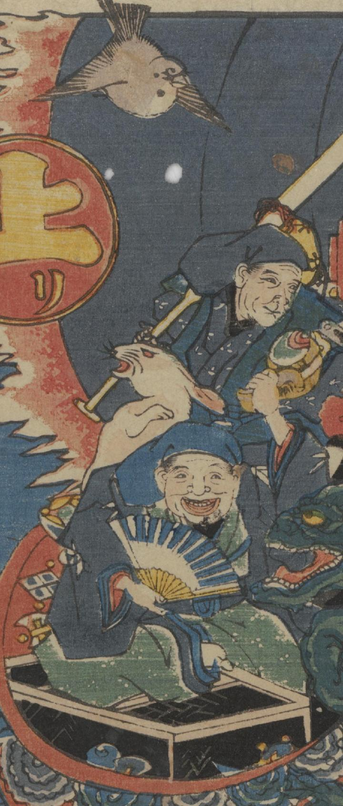

『舌切り雀』のお爺さんが葛籠の上に座り、船に乗っている。左手には、打出の小槌を持っている。上空には、雀がいる。
著作者：一惠齋芳㡬／出典：親書誌：U426_nichibunken_0381：昔咄赤本壽語禄；ムカシバナシ アカホン スゴロク／日付：2014／資源識別子：U426_nichibunken_0381_0001_0006
Copyright (c)2010- International Research Center for Japanese Studies, Kyoto, Japan. All rights reserved.